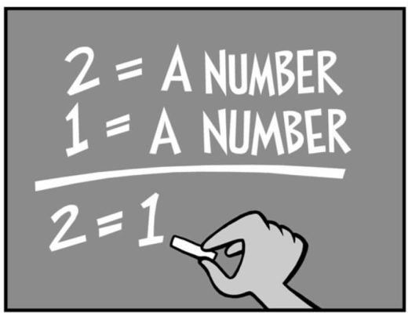

（J.L.博尔赫斯，《污言秽语的艺术》，1933）
在我看来，医学伦理学是一门进行探究和批判性反思的学科。医生、护士和其他健康专职人员通常有一个好理由去做他们所做的事情。不经仔细推敲就认为富有经验的从业者所做和所想的是正确的，这是非常愚蠢的。但是哲学所扮演的角色就是要求理由并且置这些理由于仔细的批评分析之中。苏格拉底把他自己看作一个用笨拙的问题去激怒现状的高智商且讨厌的人。医学实践必须把自身置于两个相关学科——科学和哲学中才能不断得以改进。科学会问：证明某种治疗是最好的治疗的证据是什么？那个证据好到什么程度？有关其他治疗还有什么证据？哲学要求的是做出道德选择的理由：帮助这个单身妇女通过辅助性生殖的办法怀上一个孩子是对的吗？是应该尽全力通过重症监护设备延长这个病人的生命，还是应该允许她在最小的痛苦中死去？
每个人都期望哲学推理是严格的，在逻辑上是正确的。但是总的来说，哲学，尤其是伦理学之所以如此令人激动，是因为它能提供证据和论证，不仅要求理性的严格，而且需要想象力。伦理学使用许多推理工具，但它不仅仅是一个学习如何使用这些工具的问题：想象总是存在跳跃的可能性——不同的视角，或者把整个问题置于新的背景下和把思维向前推进之间的有趣比较。
我已经使用了许多种不同的工具：第二章中的逻辑论证、错误论证、定义和滑坡论证；第二章和第三章中包括思维实验在内的案例比较；第四章中的概念分析和概念差别的辨认。让我们来更加详细地考察一下伦理学推理的部分工具。
一个有效的论证必须是逻辑上合理的。一个论证是用一套理由来支撑一个结论。一个演绎或者逻辑论证包含一系列被称为前提的陈述，这些陈述逻辑上导出一个结论。一个有效的论证是这样的：结论是应前提的逻辑需要出现的。从一个有效论证中产生的结论可能是也可能不是正确的。在第二章靠近开头的地方，我以三段论的形式引出了一个逻辑上有效的论证，但是我声明由于有一个前提是错的，所以结论也是错的。
三段论是一种可以用两个命题的形式表达的论证，我们称之为前提和由前提从逻辑上导出的结论。有效的三段论有两种主要形式。

图13 逻辑是论证的第一个工具，但是要小心错误的逻辑。
有效的三段论——第一种形式
前提1（P1） 假如p成立，那么q成立（假如陈述p是正确的，那么陈述q也是正确的）
前提2（P2） p成立（即陈述p是正确的）
结论（C） q成立（因此陈述q是正确的）
这种形式的三段论的技术名称为假言推理。一个例子如下：
P1 如果一个胎儿是一个人，那么杀他就是错误的
P2 一个胎儿是一个人
C 杀一个胎儿是错误的
有效的三段论——第二种形式
前提1（P1） 假如p成立，那么q成立（假如陈述p是正确的，那么陈述q也是正确的）
前提2（P2） q不成立（q不正确）
结论（C） p不成立（因此陈述p是不正确的）
这种形式的三段论的技术名称为否定后件推理。一个例子如下：
P1 如果一个胎儿是一个人，那么杀他就是错误的
P2 杀一个胎儿不是错误的
C 一个胎儿不是一个人
有一种人们经常采用的无效的或者逻辑上错误的论证形式，它值得我们小心注意。
三段论形式中的一个无效论证
前提1 假如p成立，那么q成立（假如陈述p是正确的，那么陈述q就是正确的）
前提2 p不成立（即陈述p是错误的）
错误的结论q 不成立（因此陈述q是错误的）
一个例子如下：
P1 如果一个胎儿是一个人，那么杀他就是错误的
P2 一个胎儿不是一个人
C 杀一个胎儿不是错误的
除了胎儿是一个人外，杀一个胎儿是错误的也许还会有其他原因。
当你正在检查医学伦理学中的一个论证时，正如我在第二章中讨论我所谓的“打纳粹牌”时所做的那样，尝试把论证简化到基本的形式是很有用的。这使得前提可以被清楚地确认和检查，并且有助于在论证中暴露谬误。医学伦理学和广义上的应用哲学是建立在我们都应该接受的前提基础上的，是与构建我们该做什么这样的论证相关的。
有效推理的一个重要成分是概念分析。概念分析主要有四种形式：提供一个定义，阐明一个概念，区分（分开）和鉴别两个不同概念间的相似性（整体化）。这些形式并不总是割裂开的。例如，在第二章中，我为不同类型的安乐死提供了一些定义，这样一个定义的过程就是进行区分的一部分，二者并不总是独立的活动。概念的澄清在医学伦理学上是一个至关重要和苛刻的任务。在大多数情况下，我们经常使用那些毫无疑问的概念，但是这些概念在新的背景下就变得很不清楚。医学上的一个重要概念就是患者的最大利益。根据英国和美国的法律，医生通常必须从患者的最大利益出发去治疗患者。假如患者是一个患阑尾炎的年轻男人，很显然他的最大利益就是要求割除阑尾。从一个同时患有严重老年痴呆和肠癌的男人的最大利益出发，该怎样制定治疗计划是非常不清楚的。这个问题包含了在这种情形下哪些因素构成了“最大利益”，以及谁又将做出判断。我们将在最后一章中看到，这个问题甚至比我们讨论一个可能在将来存在的孩子的最大利益或者说福利还要困难。
一致性的根本原则是，假如你推断你在两种相似的情形下必须做出不同的决定或者做不同的事情，那么你必须能够指出导致了不同决定的这两种情形道义上的相关差异，否则你将是前后矛盾的。
在第二章当中，我在考克斯医生的行为（注射氯化钾）和许多医生在相似的情况下非常合法的行为（注射吗啡）之间做了一个比较。我提出了，为什么考克斯医生，而不是那些注射吗啡的医生面临着严重的犯罪谋杀（未遂）指控？这是不一致的实践，还是有道义上相关的差异？明显的差异是考克斯医生打算让他的患者死去，而那些注射吗啡的医生尽管预见到患者会死去但不打算让患者死去。企图 和预见 之间的差异是否在道义上相关是需要进一步分析的。
图14 爱因斯坦使用思维实验来科学地理解宇宙。思维实验也是伦理学中一个至关重要的工具。
思维实验
用于案例比较或者一致性检查的案例可以是真实的，也可以是假想的，或者甚至是不切实际的。哲学家经常使用想象的案例来测试论证和检测概念，这些案例被称为“思维实验”。和许多科学实验一样，思维实验被设计出来以便检测一个理论。我在这本书中已经几次用到了思维实验。在考虑思维实验的过程中，使用想象可以使论证向前推进或者挑战我们常规的思维方式。
好几本书和许多论文围绕四个原则和它们的应用范围展开了医学伦理学的分析（见下页方框）。这些原则最好被看作是观点而不是逻辑论证的前提。它们可以作为一个有效的检查手段，因为全部的观点都被考虑到了。比如当考虑医生是否应该不顾患者的隐私时，通过检查源于每个原则的观点来鉴别关键问题也许是有帮助的。然而这仅仅是开始。接着还需要进行概念分析（如在这种情况下最大利益指的是什么）和判断。
另一个“自上而下的”推理形式是论证，不是基于四个原则中的一个，而是基于一个普遍的道德理论，比如说功利主义。笼统的关于道德理论的讨论超越了本书的范畴。实际上这种“自上而下的”推理包含了找出一个你认为在一般情况下是正确的道德理论，然后在你正在考虑的某种特殊情况下拓宽该道德理论的含义。
在我看来，关于道德的推理包含了我们对特定环境或案例的道德反应和我们的道德理论之间连续的动态变化。罗尔斯称此过程为反思平衡 。
在这个过程中，关于个人情况的理论和信念都能够被修订。当关于个别案例的理论和我们对其的直觉之间缺乏一致性时，没有运算法则或者计算机程序能够告诉我们哪个或者有什么是我们必须改变的。那样就是判断了。
医学伦理学中的四大原则
1.尊重患者的自主权
自主权（字面意思是自治）是建立在思想和决定基础之上的自由和独立思考、决定和行动的能力（吉伦，1986）。尊重患者的自主权要求健康方面的专职人员（以及包括患者家属在内的其他人员）来帮助患者做出自己的决定（比如通过提供重要的信息）并尊重和遵从那些决定（即使健康方面的专职人员认为患者的决定是错的）。
2.有利：促进对患者最有利的方面
这个原则强调为别人做好事在道德方面的重要性，尤其是在医学背景下为患者做好事。遵循这个原则就是要做到做对患者最有利的事情。这就产生了一个问题：谁来判断什么是对患者最有利的？根据通常的解释，这个原则着眼于一个相关的健康专职人员从病人的最大利益出发将会做出什么样的客观评估。从尊重患者自主权的原则来看，患者自己的观点被剥夺了。
当一个有能力的患者选择一个并非对他或她最有利的行为时，上述两个原则就会发生冲突。
3.不伤害：避免伤害
这个原则从反面重申了有利原则的相反方面。该原则强调我们不得伤害患者。在大多数情况下，这个原则没有给有利原则增加任何有用的内容。保留不伤害原则的主要原因是，一般认为我们显然有责任不去伤害任何人，然而我们仅仅对有限数量的人有助益的责任。
4.公正
这个原则有四个要素：分配公正、尊重法律、权利和惩罚性公正。
考虑一下分配公正原则：首先，在相似的环境下，患者通常应当获得相同的卫生保健；其次，在决定应该给某一类患者哪个等级的卫生保健的时候，我们必须考虑使用这样一种资源对其他患者的影响，也就是说，我们必须尽可能公平地分配我们有限的资源（时间、金钱、重症监护床位）。
公正的第二个要素是，是否存在某一行为，该行为虽然违反（或不违反）法律但与道德相关。许多人持有这样的观点：在某些情况下违法也许在道德上是对的。然而既然法律是通过合理的民主程序制定出来的，那么法律就应当具有道德约束力。
权利的类型和状态是非常有争议的。最基本的观念是，假如一个人有权利，那么权利将会带给他特殊的利益——一种保护，因此即使整个社会的利益因此而减少，他的权利也会被尊重。
“惩罚性”公正与合理地惩罚犯罪相关。在医学背景下，当一个人因为精神紊乱而犯罪时，这个问题时常会被提起。
正如鸟类学家认出鸟儿一样，逻辑学家喜欢找出谬论和给其命名。我们回到第二章当中的“人身批判”部分。在医学伦理学当中，找出谬误是一个非常有用的训练，因为它能够帮助我们看穿一个修辞上强大但终究是错误的论证。这里是我最喜欢的由弗卢（1989）命名和定义的两个谬误。
非真正苏格兰人的举动
这看起来像一个关于实际情况（一个经验主义的主张）的陈述，通过调整话语的意思而不让反例有任何机会，因此通过定义和剔除任何经验主义的内容，陈述变成了真的。
十漏桶策略
它
图15 非真正苏格兰人的举动：论证中的谬误。
我们在第二章中遇到了两种论证，并且我说过要更加仔细地考虑这两种论证：自然论证和扮演上帝的论证。
自然论证
自然论证归结为这样的声明：这不是自然的，因此这在道义上是错误的。该论证已经被用来反对同性恋，经常在医学伦理学背景下（在考虑安乐死和讨论现代生殖技术和遗传学的可能性时）被提出来。该论证至少在三个情形下是有疑问的。首先，还不是完全清楚说有些东西是非自然的究竟是什么意思。假如大约10的人有明显的同性恋倾向，并且在其他物种中也看到了同性恋行为，那么说同性恋是非自然的意味着什么？其次，为什么它会由非自然和道德上错误的事实中得出，这似乎很不清楚。什么样的证据能支持它呢？第三，关于非自然的在道德上是错误的断言有着大量的反例，而且大多来自医学实践本身。一个患有脑膜炎的小孩也许会被抗生素和重症监护救活。不管从什么意义上来说，没有一种处理是“自然”的。用体外受精的办法帮助夫妇生孩子也许是错误的，但是假如那是错的，也不是因为体外受精是非自然的。
扮演上帝的论证
扮演上帝的论证也能被概括为：因为这是在扮演上帝，所以这个行为在道德上是错误的。这个论证的问题和自然论证的问题相似。哪个标准能够被用来区分执行上帝的意愿和我们对上帝角色的侵占？下面哪一个是在扮演上帝：提供体外受精、中止生命维持、注射抗生素和移植一个肾脏？我认为，在我们能够决定哪些可能被认定为扮演上帝之前，我们首先必须确定哪些行为是对的，哪些行为是错的。因此扮演上帝的观念对于决定该做哪些事没有帮助。
在关于推理方法的这一章中，我想最终谈一谈滑坡论证。滑坡论证经常在医学伦理学中使用。论证的核心是，一旦你接受了一个特定的情况，那么不接受越来越多的极端情况将会是非常困难或根本不可能的。假如你不想接受更加极端的情形，你必须不接受最初的、不怎么极端的情形。
反对实施自主安乐死（我在第二章中曾简单提到过）的论证就是一个滑坡论证。例如，假设一个自主安乐死的支持者给出了一种情形，在那种情形下安乐死貌似是可以接受的。考克斯医生实施安乐死的案例也许就是这样一个例子。滑坡论证可以被用来反对杀死患者，不是因为在这个案例中，杀人是个原则上的错误，而是因为在这个案例中允许杀害将会不可避免地导致在杀害是错误的情况下允许杀害。
滑坡论证最主要的反对意见声明了一个障碍可以被放置在下坡的某个位置上，因此在爬上坡顶的过程中，我们将不会不可避免地滑到底部，而是在滑到障碍的时候就止住。
有两种形式的滑坡论证：逻辑形式和经验主义的形式。
滑坡论证的逻辑形式和连锁推理悖论
滑坡论证的逻辑形式可以被看作由三个步骤组成：
第一步： 依据逻辑，假如你接受（显然合理的）命题p，那么你也必须接受与其紧密相关的命题q。同样，假如你接受命题q，那么你也必须接受命题r，一直到命题s、t等等。命题p、q、r、s、t等等形成了一系列的相关命题，邻近的命题比那些离得比较远的命题更加相似。
第二步： 这一步是从论证的反面展示或者获得一致性：在这个步骤下的某一阶段，命题变得明显难以接受，或者暴露出错误。
第三步： 这一步是应用正式逻辑（否定后件推理）去推断由于后面命题中的一个（比如命题t）是错误的，那么第一个命题p也是错误的。
概括起来说，第一步是建立前提：假设p成立，那么t成 立 。第二步也是建立前提：t是不成立的 。第三步是指出依据逻辑，从这些前提出发可以得出p不成立 。
论证中的第一步是特别与滑坡论证相关的。论证中至关重要的部分是建立一系列的命题，其中彼此邻近的命题非常接近，不可能有合理的理由去支持一个命题是正确的（或者是错误的）而邻近的命题是错误的（或者是正确的）。
滑坡论证的逻辑形式是与一类最早由古希腊人（据称是欧布里德——见普里斯特，2000）发现的以“连锁推理悖论”知名的悖论紧密相关的。
“连锁推理”这个名称来自希腊语soros，意为“一堆”。这一悖论的早期例子是，一粒沙子成不了一个沙堆。加一粒沙子到不是一个沙堆的东西上去将不会堆成一个沙堆，因此永远不会有一个沙堆。
由于我们使用的许多（也许是大多数）概念有一些含糊的地方，悖论的这些形式产生了：假如一个概念适用于一个对象，假如那个对象有一个很小的改变，那么这个概念仍将依然适用。但是我们偶然观察在沙滩上玩的一个小孩将会发现沙堆确实存在，滑坡论证的逻辑形式是有缺陷的。即使命题p是成立的，命题t也有可能是不成立的。对滑坡论证有三种可能的回应。
图16 一个滑坡可以被转化为一段楼梯。
1.论证每个小的改变产生一个小的（也许是极其微小的）道德差异（如同每粒沙子）。
2.在滑坡的某个位置上画一条线或者放置一个障碍。虽然这条线不是精确地画出来的，但是这条线确实是画出来的。为了保证政策清晰（和法律清晰），画精确的线通常是非常明智的，尽管根本的内容和道德价值变化得更加缓慢。
3.第三个回应（当然并不总是适当的回答）是因某个原则性理由在一个不是武断而是有道理的位置放置一个障碍。在安乐死的例子当中，一个支持者也许会争辩说，自主安乐死和其他形式如非自主安乐死之间有差异。在接受自主安乐死的可能性时，一个人不需要在不知不觉中接受非自愿安乐死或者强迫安乐死：其中的逻辑关系更加像一段楼梯而不是滑坡。
滑坡论证的经验主义形式
滑坡论证的第二种形式是经验主义的或者“实践当中的”，而非逻辑形式。自主安乐死的反对者也许会争辩说，假如我们允许医生去执行这些安乐死，那么在现实世界当中，这实际将会导致非自愿安乐死（或者更甚于此）。这样一个反对者也许会承认从一个方面滑到另外一个方面没有逻辑理由，但是在实践当中，这样的滑坡确实会发生。因此，我们必须不让自主安乐死作为某个政策而被合法化，即使这样的安乐死在原则上不是错误的。
论证的经验主义形式依赖于关于实际世界的假设，并因此引发了这类假设的证据是否有说服力的问题。在实践中会发生什么经常取决于政策的措辞和执行精确到何种程度。通过放置一个障碍或者仔细说明使某个行为合法或不合法的情境来避免滑下斜坡是完全可能的。
在这一章中，为了思考推理的一些工具，我已经从医学伦理学的特定问题中退了出来。我现在将回到问题中去，并且在下一章中我将声明法律对待精神疾病患者的方式是不公平的。我首先将声明法律是不一致的。